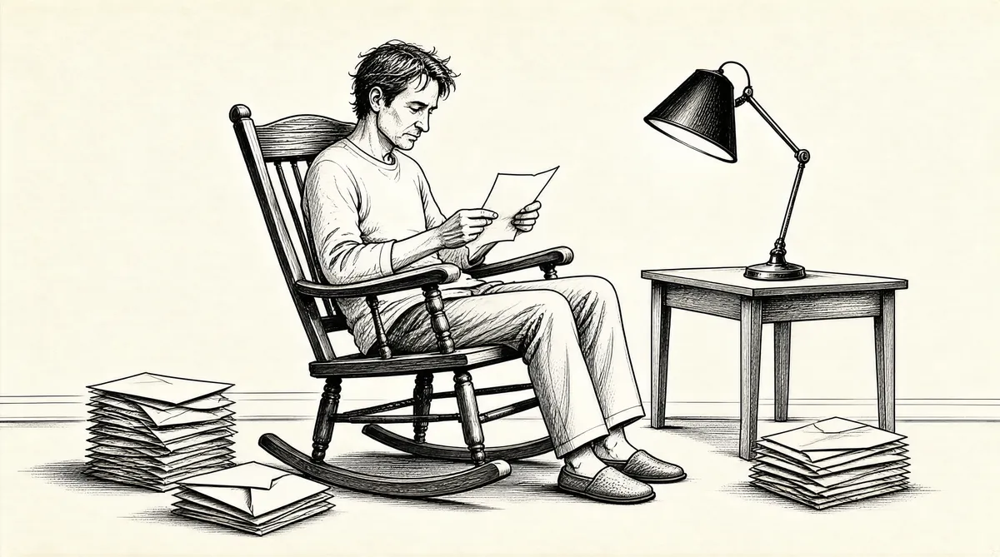

第19章 怯场

虽然沃伦对自己毫不怀疑，可他能理解汤普森博士对他如何养活一个家庭的担心。因为他不能在格雷厄姆–纽曼公司工作，所以他下决心要成为一个股票经纪人，而且是在奥马哈，这个远离华尔街的地方。按照一般的常识，如果你想在股票市场挣钱，纽约才是最合适的地方，所以沃伦的决定非同寻常。但是远离华尔街的条条框框会让他觉得自由，同时他也想和他的父亲一起工作，而且苏珊也在奥马哈——沃伦从不喜欢离家很远。
差不多21岁时，沃伦已经对自己的投资能力超级自信。到1951年年底，他已经将他的资产从9804美元增值到19738美元，也就是说，他在一年之内挣了75%的投资利润。1虽然他咨询过他的父亲和本杰明·格雷厄姆，可让他吃惊的是，两个人都表示，“也许你要等上几年”。格雷厄姆一如既往地认为这个市场上的股价太高了。而霍华德持悲观态度，他喜欢矿业类股、黄金类股或者其他可以抵御通胀的投资产品。他不认为其他任何一种投资将会是好的投资，所以他很担心儿子的将来。
这些对沃伦而言都没有意义，因为自1929年以来，商业价值得到了巨大增长。
当市场被高估时，这绝对是你在其他时间所见事实的反效果。我已经研究过这些公司，我就是不明白你们为什么不想去拥有它们。这是在微观的层面上，不是对经济增长或者类似的什么作评估。我是在和微观的钱打交道。在我看来，不去拥有它们简直是疯了。可是在另外一端有格雷厄姆和我的父亲，格雷厄姆用他高达200的智商和所有经验告诉我要等待，而我的父亲，如果他叫我从窗户跳出去，我是一定会照做的。
然而，他仍然做出了挑战两位权威人士的决定，于他而言，这是很重要的一步，这要求他考虑自己的判断优于他们的判断的可能性，以及他最深深尊敬的两个人的思考是否不够合理。他依然确信自己是正确的。如果他的父亲让他从窗户跳出去，他也许真的会做——不过如果这意味着丢弃满是便宜股票的《穆迪手册》，那他可不干。
事实上，他看到的机会太多了，因此他们第一次认为应该借钱投资。他愿意承担等于他资本净值的1/4的债务。
我缺少钱，如果我对一只股票很上心，那我就不得不卖掉一些其他的股票。我厌恶借钱，不过我还是从奥马哈国民银行贷了大约5000美元。因为我还不满21岁，所以我父亲不得不为这笔贷款联合署名。银行家戴维斯先生把整个过程搞得像个成年仪式。他说了类似这样的话，“现在你是一个男人了”，然后又提到了5000美元，“这是个神圣的责任，我们知道你已经具备了将它还回来的能力”。整个过程持续了半个小时，而我就一直坐在那张大桌子的旁边。
霍华德也许觉得为儿子的贷款联合署名既骄傲又有点儿愚蠢，因为沃伦成为一名生意人已经至少12年了。既然沃伦已经下定决心，霍华德愿意带他去自己的巴菲特–福克公司，同时建议他先去当地著名的柯克帕特里克·佩蒂斯公司面试，见识一下奥马哈最好的经纪公司。
我去见了斯图尔特·柯克帕特里克，面试中我说我想要聪明的客户，我将努力寻找那些有理解能力的人。而柯克帕特里克表示，事实上，不必担心客户够不够聪明，而要关心他们是不是有钱。这样很好，我不可能因此去顶撞他，而我除了父亲的公司，也不想去其他任何地方工作。
在巴菲特–福克公司，沃伦被安置在没有空调的4间私人办公室中的一间，紧挨着“笼子”——那是职员处理钱和证券的一块用玻璃围住的区域。他开始向他认识的最安全的人——姑妈和大学朋友们——推销他最喜欢的股票，包括他在沃顿的第一个室友查克·彼得森，他现在在奥马哈从事房地产行业，他们又重新取得了联系。
我打的第一个电话是给我的姑妈艾丽斯，我卖给她100股GEICO。她对我很感兴趣，这让我感觉良好。接着，我让弗雷德·斯坦贝克、查克·彼得森等等我能找到的人都买了。但大多数是我自己买的，因为其他人不买，我就想办法自己再买5股。我有一个野心，我想拥有这家公司1‰的股份。现在它总共有175000股，我计算过，如果这家公司有一天能值10亿美元而我又有1‰的股份，那我也有100万美元了。所以我需要175股。2
同时，沃伦的工作还包括受托卖股票。但在这个狭小的圈子之外，他碰到了几乎无法克服的困难。他开始遇到他的父亲当初创立这家经纪公司时面对的障碍，尝到那些奥马哈古老家族的人——银行、牧场、啤酒厂以及大百货商店的拥有者——对这个杂货商的孙子嗤之以鼻的滋味。现在他的父母已经回华盛顿，沃伦孤身一人留在奥马哈，感觉自己根本得不到尊重。
那时候所有的股票都靠提供全面服务的股票经纪人来卖，大多数人买个股而非基金。所有人统一支付一股6美分的固定佣金，交易都是当面成交或者是通过电话达成。每一笔交易都是在和你的经纪人聊上几分钟后就完成的，你的经纪人既是商人，又是咨询顾问，还是朋友。他也许就住在你家附近，你能在聚会上看到他，和他在乡村俱乐部打高尔夫，或者他来参加你女儿的婚礼。
大客户们并不把沃伦当回事。内布拉斯加联合制造厂是他父亲的一个客户，曾经安排他在早上5点半就出来。3“我21岁了，我围着这些人卖股票。而当我把一切都安排好时，他们会问，‘你父亲是怎么看的？’我总是碰到这样的人。”沃伦看起来像“傻瓜”一样，努力地去推销。4他不知道如何解读别人，不会交谈，当然也不是一个好的听众。他谈话的方式是宣传而不是接收，一紧张，他就会像一个消防水管一样滔滔不绝地讲出那些他喜欢的股票的信息。一些潜在客户听了他的评论，利用他的思想，通过其他渠道验证，最后却从其他经纪人那儿买股票，于是沃伦拿不到佣金。沃伦震惊于这些和他面对面说话，而且还会一次又一次在城里碰面的人的背信弃义。他感觉自己被欺骗了。另外有些时候，他只是感到困惑。一次他去拜访一个70多岁的家伙，那家伙的桌上堆满了钞票，而女秘书就坐在他的膝盖上。她亲吻他一次，他就给她1美元。
我父亲没有教过我在这种场合下应该怎么做。总的来讲，我没有得到支持。当我第一次卖GEICO的股票时，巴菲特–福克在市中心有一间小办公室，股票凭证会送到那里，凭证上面有杰里·纽曼的名字。我是从他那儿买的股票。巴菲特–福克公司里的那些家伙们会说：“天呀，如果你觉得你比杰里·纽曼还聪明……”
事实上，格雷厄姆–纽曼正在筹建新的合伙关系，一些投资人于是抛出GEICO的股票，以筹集资金加入，因此，事实上是他们在卖股票，而不是格雷厄姆–纽曼。沃伦并不了解这些，他也不关心是谁在卖GEICO。5他从未想过去问公司里的人为什么他们要出售股票，他对自己的观点毫不动摇，也从不隐瞒这一点。
在那些没上过大学的人中间，有研究生学位的我是个聪明人。有一次，一个叫拉尔夫·坎普贝尔的保险代理人过来见福克先生，说：“为什么这个孩子到处推销这家公司？”GEICO不用保险代理人，于是我像个聪明人那样回答：“坎普贝尔先生，你最好买点儿这只股票当作失业保险。”
戴尔·卡内基的第一条原则——不要批评人，这条原则全部含义还没有被沃伦充分理解。沃伦在用他后来招牌式的“巴菲特的智慧”去显示他比其他人懂得多，但是人们为什么要相信一个21岁的年轻人的才智呢？然而他做到了。看到他不分昼夜地查阅手册、汲取知识，巴菲特–福克公司里的人肯定很意外。
我一页一页地查阅《穆迪手册》，内容涉及工业、运输、银行以及金融，总共10000页，而我查阅了两遍。我确实每个行业都看——虽然有些看得不太仔细。
即使是如此沉浸于寻找股票的游戏里，沃伦也不愿意仅仅是个投资者，或者仅仅是个推销员。他还想效仿本杰明·格雷厄姆，做一名教师。于是他和奥马哈大学签约，教授夜校课程。
一开始他和他的股票经纪人朋友鲍勃·索纳搭档。鲍勃负责这个名为“有利可图的股票投资”课程前4周的课。索纳给学生讲解一些基本知识，比如怎样读《华尔街日报》的时候，沃伦就站在走廊里听取好的投资想法。沃伦则负责后面的6个星期6，最终教完了全部课程，并且给它起了一个更谨慎的名字“稳健的股票投资”。站在教室前面，沃伦容光焕发，他在地板上踱步，语速飞快，学生们努力避免被涌向他们的洪水般的信息淹死。但是，尽管沃伦具备扎实的知识，他从不向学生保证他们会变得富有，或者听他的课就能获得特别的业绩，他也没有自我吹嘘在投资方面的成功。
他的学生范围很广，从股票市场的专业人士到对此一无所知的家庭主妇、医生、退休人士等。这标志着一个轻微的转变：自20世纪20年代经济危机以来，那些长期缺席的投资者们开始回归。这也是格雷厄姆认为市场估值过高的部分原因。沃伦的教学能适应学生们不同水平的知识技能。他还套用了格雷厄姆的一些教学方式，比如使用“公司A、B”方法或者另外一些格雷厄姆用的教学小技巧。他严格而公平地给出学习等级，艾丽斯姑妈坐在教室里用崇拜的眼神凝视着他，但他最后给了她一个“C”。7
人们总是抛出股票的名字，问他该买还是该卖。他可以根据记忆就他们给出的股票讲上5分钟甚至10分钟，关于它的财务数据、市盈率、股票的交易规模等。很显然，他可以为数百只股票做出这样的分析，好像他是在引用棒球数据一样。8有时，前排的一位女士会问：“我过世的母亲留给我一些ABC公司的股票，现在价格升了一点儿，我该怎么做？”他会回答：“我想我会卖了它，也许会买进……”然后给出三四只类似GEICO的股票，或者他完全有信心的（而且已经持有的）几只股票中的一只。9
同时，沃伦就像4月里的啄木鸟一样忙着工作挣钱。他很快就要去照顾一个家庭了，这会将他的收入分流。一部分挣来的钱将会用于投资并且继续增长；另外一部分则用来供他和苏珊生活，这是他所处环境的重大改变。沃伦曾经为削减开支而住在哥伦比亚大学服务员的房间，吃奶酪三明治，他那时的活动就是去听讲座或为他们弹夏威夷四弦琴，而不是去时髦的俱乐部。现在他又回到了内布拉斯加，他可以住在父母的房子里进一步减少开支，即使这意味着在父母从华盛顿回来时，他会偶尔和母亲利拉碰面。
他从来都不需要什么动力去推动自己努力耕耘自己的资产。他坐在巴菲特–福克公司的办公室里，双脚跷在办公桌上，在格雷厄姆和多德的书里仔细寻找，以得到新的启发。10他找到了一只股票，费城里丁煤铁公司，一家开采无烟煤的公司，每股只卖19美元多一点儿，看起来很便宜，因为它还拥有相当于每股8美元的废渣堆。为了对这只股票做出理性的决策，沃伦会很高兴花上几个小时计算煤矿和废渣堆的价值。他自己买了，也让艾丽斯姑妈和查克·彼得森都买了。当股票突然跌到9美元时，他买了更多。
他买过一个叫克利夫兰毛料厂的纺织公司的股票。它每股流动资产为146美元，而股票的售价低于这个数。他认为这个数字不能反映“一家装备良好的工厂”的价值。
沃伦为这只股票写了一个简短的报告。他很高兴这家公司正在将挣来的钱分发给股东们，这是实实在在的利益。“他在报告中注明：8美元分红为大约115美元的现价提供了有充分保证的7%的收益。”11他使用“有充分保证的”这个词，是因为他认为克利夫兰毛料厂有足够的收入支付分红。而后来证明沃伦并没有先见之明。
在他们取消分红后，沃伦就叫它“克利夫兰最差的厂”。沃伦气疯了，决定自己花钱搞清楚问题出在哪儿。“我一路飞奔，前往克利夫兰参加这家‘克利夫兰最差的厂’的年会。我晚了大概5分钟，已经休会了。可是我，一个从奥马哈赶来的21岁的小伙子，自己的钱在这只股票里。会议主席说：‘对不起，已经太迟了。’后来他们的销售代理，董事会成员之一，同情我的遭遇，拉我到一边回答了几个问题。”但是，这些回答并不能改变什么。沃伦感觉糟透了，因为他也让其他人买了“克利夫兰最差的厂”。
再没有比卖给别人会让他们亏钱的投资产品更让沃伦痛恨的事情了，他无法忍受让别人失望。时光退回到沃伦上6年级时，那时已是如此，他让多丽丝投资城市服务公司的优先股，最后投资失败。她毫不犹豫地就这件事“提醒”他，而他也觉得自己有责任。为了避免再让别人失望，他愿意做任何事情。
沃伦寻找方法让自己对这个开始憎恨的工作少一些依靠，他一直都很喜欢做生意，于是和国民警卫队的朋友吉姆·谢弗合伙买了一个加油站。他们买的是一家辛克莱加油站，离一家德士古加油站很近，后者“生意总是比我们好，这简直让我们发疯”。沃伦和他的姐夫杜鲁门·伍德每个周末过来帮忙。他们“带着微笑”洗挡风玻璃（尽管沃伦厌恶体力劳动），做任何他们可以做的去吸引新顾客，然而司机们还是继续去街对面的德士古加油站。“它的主人很成功，很受人喜欢。每个月他都能击败我们。就是在那时，我知道了顾客忠诚度的威力。那个家伙可以永远经营下去，他有老主顾。而我们却无力改变那种状况。”
我买加油站是最愚蠢的一件事——我损失了2000美元，那时对我而言，这是一大笔钱。我还从来没有遭受过真正的损失，这很令人痛苦。
对沃伦而言，他在奥马哈做的每一件事都增强了他认为自己幼稚和没有经验的感觉，他再也不是一个像男人一样做事的早熟男孩了，而是一个看起来像并且有时候做事也像个孩子的即将结婚的年轻男子。西泽–弗雷泽公司，他两年前在鲍勃·索纳的办公室卖空的股票，至今还顽固地在5美元附近晃悠，而不是如他之前期望的那样跌到零。卡尔·福克总是就此做出有趣的表情，并且质疑他的判断。沃伦对他的工作越来越觉得倒胃口，他开始认为自己是一个“开药方的人”。“我必须对那些懂得不够多的人解释他应该吃阿司匹林还是止痛片”，而人们会对“这些穿白大褂的家伙”——股票经纪人——言听计从。经纪人的收入是以营业额而不是建议为基础，换言之，“他的收入是以他卖出去多少药为基础计算的。而他从有些药中得到的收入要多过其他药。你会去一个收入完全与开了多少药挂钩的医生那儿吗？”但是那时的股票经纪人就是这样工作的。
沃伦认为这个行业天生就有利益冲突。他给他的朋友和家人推荐GEICO的股票，并且告诉他们最好能持有20年。而这意味着他不能从他们那儿得到更多的佣金。“你不能以那种方式谋生，这使你的利益和客户利益相悖。”
尽管如此，他已经通过大学校友网络开始发展一个自己的小小的老主顾群。1952年春天，沃伦到北卡罗来纳州索尔兹伯里市和弗雷德·斯坦贝克共度复活节。他迷住了弗雷德的父母，并且令他们感到愉悦。他谈论股票，引述本杰明·格雷厄姆的话，拿百事可乐和火腿三明治当早餐，这些都让他们觉得很有意思。12返回奥马哈后不久，弗雷德的父亲就给沃伦下指令出售托尔公司，一家洗衣机公司的股票。沃伦了解到，有一个客户通过另一个叫哈里斯·厄汉的经纪人在买这只股票，接着他又接到斯坦贝克的银行关于该交易的电话，于是他就认为他现在有两个指令，他卖了两次这只股票，第二次是卖了他根本就没有的股票。于是他不得不去寻找其他的股份，而最终只好自己购买，以便完成第二次交易。
尽管发生了差错，斯坦贝克先生还是很仁慈地对待沃伦。这是沃伦的错，斯坦贝克先生却自己承担了所有损失。沃伦非常感激，一直没有忘记这件事情。其实他有太多的理由去关注一下第二个买家，一个被称作“疯狗”巴克斯特的人，他是奥马哈主要的赌博中心的常客，和这个城市中的一些非法赌场有关系。巴克斯特亲自来到巴菲特–福克公司，走到出纳那儿，拿出一沓100美元的钞票，炫耀地四周挥舞。巴菲特–福克公司现在被用来洗非法的赌博资金了吗？这样的情形又增加了沃伦对这份工作的不喜欢。即使在他卖股票的时候，他也感到矛盾。他已经将巴菲特–福克公司变成了一个“做市商”，扮演中间人的角色，像交易商一样买卖股票。13做市商以稍稍高出它买的价格将股票卖给客户，或者以稍低于它卖这只股票的价钱从客户那儿买回股票，来获取利润，这个差价就是它的利润。而客户看不到差价。“做市商”的做法将一个经纪人公司从一个单纯的指令接收者变成华尔街游戏的玩家。当沃伦因自己有将巴菲特–福克公司变成“做市商”的诀窍而感到自豪时，他也被其中的冲突困扰了。
我不想蒙蔽客户，我从来不会将我不信任或者我自己没买的股票卖给客户。另外一方面，其中有未公开的利润。如果有人就这些问我，我会告诉他们。但是我不喜欢这样的事，我想和我的客户在同一边，所有人都知道进展情况。而一个推销员出于天性是不会那样做的。
不管沃伦如何看待他的这份经纪人工作，其中总会有潜在的利益冲突，使客户亏钱和失望。他更愿意管理他们的钱而不是卖股票给他们，这样他的利益就和客户的利益一致。问题是，在奥马哈没有这样的机会。1952年的春天，他写了一份有关GEICO股票的文章，引起了一个很有影响力的人的注意。随后，他的运气看起来就要来了。这篇题为“我最喜欢的证券”的文章出现在《商业和金融编年史》杂志上，不仅为沃伦最喜欢的股票做了广告，而且解释了他的投资思想。这篇文章吸引了比尔·罗森瓦德，他在西尔斯公司长期任董事长，是慈善家朱利叶斯·罗森瓦德的儿子。小罗森瓦德掌管着美国证券公司，一家以家族拥有的西尔斯公司股份而创建的货币管理公司。14该公司追求风险最小化和保存资产情况下的高回报。罗森瓦德和本杰明·格雷厄姆联系，后者给了沃伦很高的评价，于是罗森瓦德给了沃伦一份工作。沃伦太想接受这份工作了，即使这意味着他要搬回纽约。但是，他必须获得国民警卫队的批准才能离开奥马哈。
我问指挥官我是否有可能转到纽约去接受这份工作。他回答：“你必须去总指挥那儿问问。”我去了林肯，坐在州政府大楼里等了一会儿，然后进去见亨宁格将军，我已经事先写信向他解释了整件事情，并且请求他的批准。
他立刻就回答：“请求不予批准。”
事情到此就结束了。那意味着只要他不想让我走，我就必须一直待在奥马哈。
因此沃伦被困在巴菲特–福克公司，为了生活不得不继续“开药方”。他回到奥马哈的第一年里，能让他感觉舒适的主要是他的未婚妻。他开始依赖苏珊，她也一直在努力理解他。她开始体会到利拉·巴菲特的易怒情绪对她儿子的自我价值感造成的伤害，并且开始去修复它。她知道他需要的主要是被爱的感觉，以及从不被批评，而且他还需要感觉到自己在社交方面也会成功。“当我和她在一起时，人们会更多地接受我。”他说。虽然她还在奥马哈大学读书而沃伦已经工作了，但就他和未来妻子的关系而言，他就像一个初学走路的孩子，凝望着父母。他们两人都还住在各自父母的家里，久而久之，沃伦找到了避免和母亲单独相处的方法，那就是利用她有责任感的天性，在她在场的时候，用各种需求和要求“围攻”她。上大学以后，他有很长一段时间没有和母亲相处，这削弱了他对与母亲相处的忍受能力。当她和霍华德从华盛顿回来参加沃伦和苏珊的婚礼时，苏珊注意到她的未婚夫尽可能地回避他的母亲。不得不和她待在一起时，他总是将脸扭向另一边，牙齿咬得紧紧的。
沃伦该搬出去了。他打电话给查克·彼得森：“我还没找到我们住的地方。”于是查克·彼得森帮他们在离市中心几英里的地方租了间小小的公寓。沃伦给有强烈的自我表现欲的苏珊1500美元限额，去装点他们的第一套公寓。于是她和沃伦的姐姐多丽丝起程前往芝加哥购买她喜欢的现代风格的家具。15
随着结婚日期1952年4月19日的临近，仪式究竟能不能如期举行突然变成了问题。婚礼的前一周，密苏里河发洪水淹没了奥马哈的上游。大水继续南行，官方预测到周末洪水将漫过河岸并且淹没整个城市，国民警卫队很有可能将要出动。
整个城市都是沙袋。我已经让所有的好朋友来参加婚礼，弗雷德·斯坦贝克当我的伴郎，还有各种各样的招待员和客人们。因为我还是国民警卫队的成员，他们都开我的玩笑：“哦，不要担心，我们可以代替你去度蜜月。”类似这样的玩笑持续了一周。
婚礼前几天，霍华德开车带沃伦和弗雷德去了河边。成千上万的志愿者们正在修建双层的沙袋墙，6英尺高4英尺宽。运送沙土的巨大卡车的轮子陷在泥里，好像在橡胶上行驶一样。16沃伦屏住了呼吸，希望自己不会被召集来搬沙袋，这暂时的堤防能够守住城市。
星期六到了，我们将在下午3点结婚。大约正午时，电话铃响了。我母亲说：“那是你的。”我拿起电话，那一头的家伙问：“是下、下、下士巴菲特吗？”我有一个上级有很明显的口吃。“我是上、上、上尉墨菲。”他接着说。
如果他没有口吃，也许我已经说了一些会令我上军事法庭的话了，因为我认为是哪个家伙在开我玩笑。但是事实上，他在说：“我们已经出动了。你、你、你什么时候能出现在兵工厂？”（沃伦几乎心脏病发作。）17于是我说，“哦，我将在3点结婚，5点之前我也许能到那儿。”他又说：“要按、按、按时报到。我们将巡查东奥马哈沿河地区。”我回答：“好的，长官。”
挂了电话后我整个人沮丧不已。一个小时后我又接到了一个电话，这次这个人有非常正常的语音。他问：“是下士巴菲特吗？”我回答：“是的，长官。”对方又说：“我是伍德将军。”18他是34师的总指挥，住在西内布拉斯加。伍德将军又说：“我撤回墨菲上尉的命令。祝你愉快。”
这时离他人生中最大的一件事只有两个小时。沃伦在3点前出现在邓迪长老会教堂高耸的哥特式大殿里。在奥马哈，国会议员的儿子和汤普森博士的女儿结婚可是一件大事情，数百名宾客，包括奥马哈很多的上层人士，如期而至。19
“汤普森博士非常自豪，而我是如此紧张，只能靠数数缓解心情，我故意没戴眼镜，所以我就可以不用去看清那些出席的人。”沃伦还让平时沉默的斯坦贝克用说话来分散他的注意力，这样他就不用集中注意力到正在发生的事情上了。20
伯蒂是苏珊的伴娘，而苏珊的姐姐多蒂担任首席女傧相。拍完照后，客人们去往铺了亚麻地毡的教堂地下室，那里有不含酒精的鸡尾酒和婚礼蛋糕。汤普森夫妇和巴菲特夫妇都不是俱乐部人士。苏珊笑得像一把象牙扇一样，而沃伦红光满面，胳膊缠绕在苏珊的腰间，似乎想要阻止他们俩飞到空中去。又拍了一些照片后，他们换上了外出的衣服，然后跑过欢呼的人群，钻进了艾丽斯·巴菲特借给他们度蜜月的车。沃伦已经在后座上堆满了《穆迪手册》和账簿。21从奥马哈开始，这对新婚夫妇开始了他们的蜜月旅行，一个全国范围的汽车旅行。
“新婚之夜，我们在内布拉斯加瓦胡的一家威格威姆咖啡馆吃了炸春鸡。”巴菲特回忆。22威格威姆离奥马哈不到一个小时车程，地方很小，只有几个售货亭。沃伦和苏珊从那儿又开了30英里到林肯的康哈斯科酒店过夜。
第二天，我买了一份《奥马哈世界先驱报》，上面有一篇文章写道，“只有爱能够让警卫队员留步”。231952年的大洪水是奥马哈现代史上最糟糕的一次，人们为了防止它泛滥付出了巨大的努力。（警卫队的）其他人都在整日搬运沙袋，在洪水里巡查，和蛇鼠为伴，而我是唯一一个没有被召集的人。
新婚夫妇在美国西部和西北部旅行。沃伦从没去过那儿，而苏珊很熟悉西海岸。他们拜访了她的家族，去了大峡谷，过得很开心。“我们没有像报道中说的那样停下来去考察公司和投资项目。”巴菲特坚称。回来的路上他们在拉斯韦加斯稍作停留。赌徒埃迪·巴里克和萨姆·兹格曼不久前搬去那儿，并且买了火烈鸟酒店。24另一个同伙杰基·高汉紧跟着也来了，他投资了包括火烈鸟酒店和巴贝里海岸在内的多家赌场。这些人都在巴菲特家的杂货店买过东西，弗雷德·巴菲特虽然不是一个赌徒，但和他们都相处得很好。对沃伦而言，在拉斯韦加斯的感觉就跟在家一样，充满了赛马场的回声以及认识他们家族的人，因此他一点儿也不害怕。“苏珊玩儿老虎机中了个头奖。她才只有19岁，因为她不够年龄，所以他们不给她钱。我就说：‘看，你们收了她的钢镚儿了。’于是他们就给了她钱。”
离开拉斯韦加斯后，他们就回到了奥马哈。沃伦忍不住地笑话他那些国民警卫队里不幸运的同伴们：“哦，蜜月太棒了，简直好极了，整整三个星期。而那时，这些国民警卫队的家伙们正在泥泞中跋涉呢。”
[1]也称为骨头堆，是去除了原煤中如岩石、灰尘等杂质后的残留物。曾被认为有价值，现在已弃之不用，因为它一旦着火就很难熄灭。